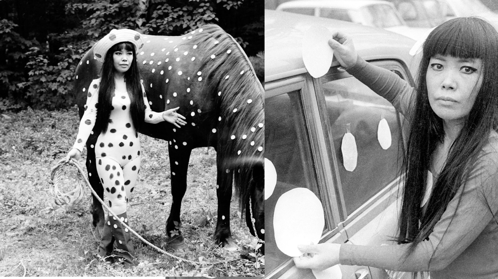

Yayoi Kusama
Yayoi Kusama (草間 彌生, Kusama Yayoi, born 22 March 1929) is a Japanese contemporary artist who works primarily in sculpture and installation, but is also active in painting, performance, video art, fashion, poetry, fiction, and other arts. Her work is based in conceptual art and shows some attributes of feminism, minimalism, surrealism, Art Brut, pop art, and abstract expressionism, and is infused with autobiographical, psychological, and sexual content. She has been acknowledged as one of the most important living artists to come out of Japan
Born into a family of merchants who owned a plant nursery and seed farm, Kusama began drawing pictures of pumpkins in elementary school and created artwork she saw from hallucinations, works of which would later define her career. Her mother was not supportive of her creative endeavors; Kusama would rush to finish her art because her mother would take it away to discourage her. Her mother was also apparently physically abusive, and Kusama remembers her father as "the type who would play around, who would womanize a lot". The artist says that her mother would often send her to spy on her father's extramarital affairs, which instilled within her a lifelong contempt for sexuality, particularly the male's lower body and the phallus: "I don't like sex. I had an obsession with sex. When I was a child, my father had lovers and I experienced seeing him. My mother sent me to spy on him. I didn't want to have sex with anyone for years [...] The sexual obsession and fear of sex sit side by side in me." Her traumatic childhood, including her fantastic visions, can be said to be the origin of her artistic style.
When Kusama was ten years old, she began to experience vivid hallucinations which she has described as "flashes of light, auras, or dense fields of dots". These hallucinations also included flowers that spoke to Kusama, and patterns in fabric that she stared at coming to life, multiplying, and engulfing or expunging her, a process which she has carried into her artistic career and which she calls "self-obliteration". Kusama's art became her escape from her family and her own mind when she began to have hallucinations. She was reportedly fascinated by the smooth white stones covering the bed of the river near her family home, which she cites as another of the seminal influences behind her lasting fixation on dots.

Even the restrooms are covered in polka dots.
The first exhibition at the museum in Tokyo’s Shinjuku district features 45 works created between 2004 and 2017, including a series entitled ‘My Eternal Soul’. It includes a sparkly pumpkin statue, large paintings with meticulously replicated drawings of dots and eyes, and red polka dots on mirrors inside a toilet. Kusuma said in a statement she wanted visitors to ‘see and feel my philosophy towards life... all my love devoted to all beloved humans through a sincere, lifelong endeavour towards art.’